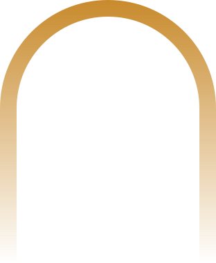
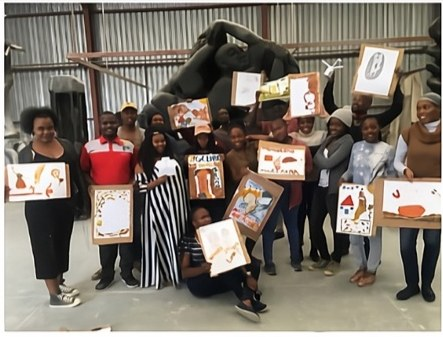
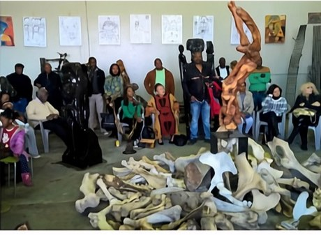
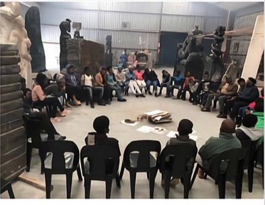

Ubuntu
SumudOur triadic philosophy.
It reframes education as re-membering, and positions artistic expression as a method of research, pedagogy, and social transformation.
Six commitments, one direction.
Promote artistic and cultural heritage as living knowledge.
Living heritagePreserve the documents and materials that anchor artistic and cultural heritage.
PreservationSupport research, education, and public engagement grounded in AIKS: through mentorship, fellowships, and training.
Education & researchFoster local, continental, and global cultural exchange and diplomacy.
Cultural diplomacyLeverage digital technologies to expand access to heritage and learning.
Digital accessAdvocate for the sustainability of the cultural and heritage sector.
Sector advocacyEducation sits at the centre of our work.
Re-membering through school outreach, archival training, short courses and university partnerships — our programmes include research workshops across South Africa, Zimbabwe, Ghana, and Tunisia, as well as fellowships, mentorship, object-based learning, university seminars, and open-access digital resources.
Aligned with the frameworks that carry knowledge across borders.
Our work aligns with UNESCO priorities, the African Union’s Agenda 2063, and global frameworks for protecting intangible cultural heritage and advancing more equitable knowledge systems.
Seen through the door.

School & outreach
Hands-on art labs, curriculum-aligned projects, and youth fellowships.

Archival & digital heritage training
Teaching preservation methods, digital cataloguing, and community archive management.

Fellowship & resources
Preservation methods, metadata standards, and community-run digital catalogues.